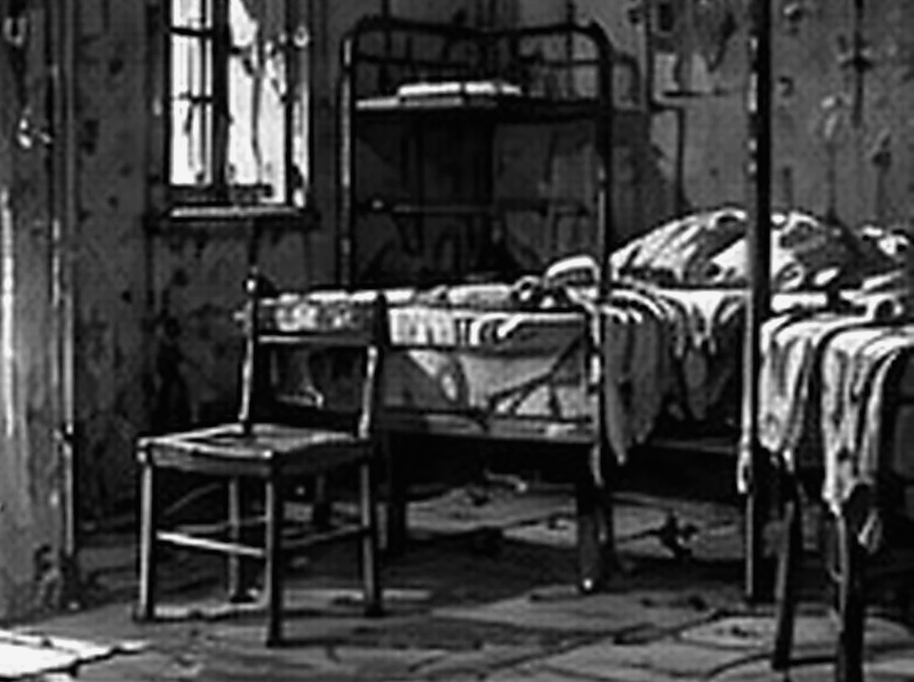
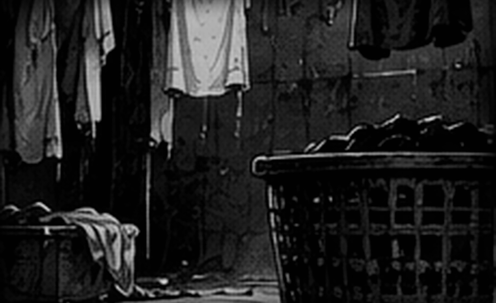
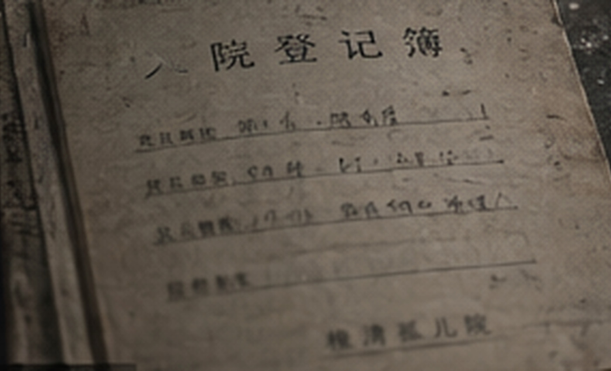
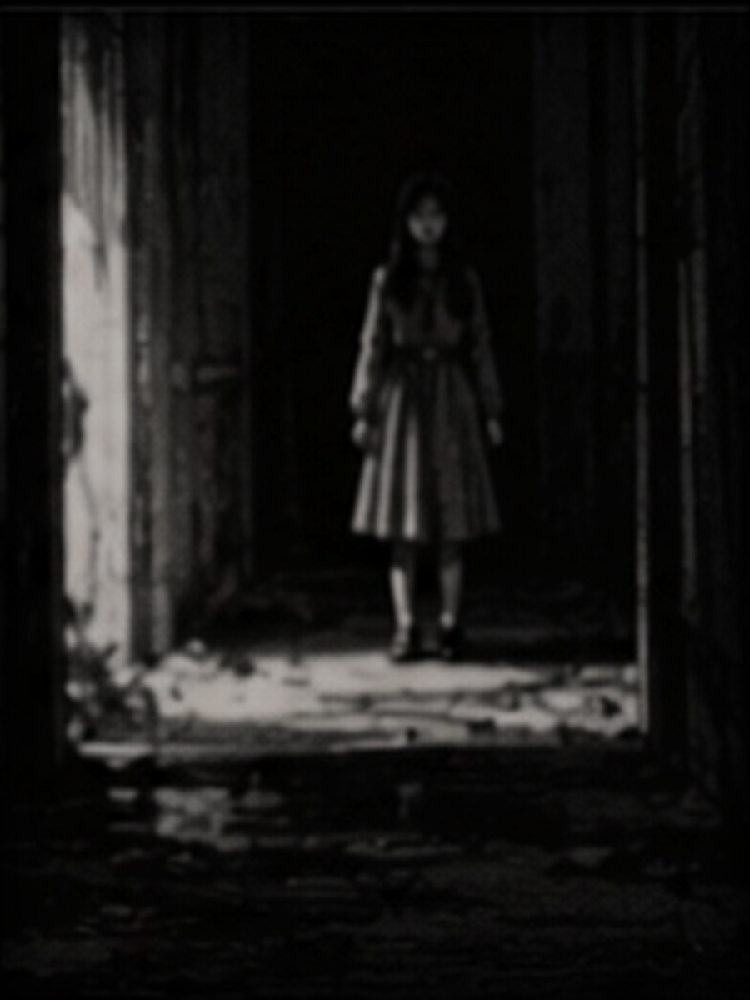
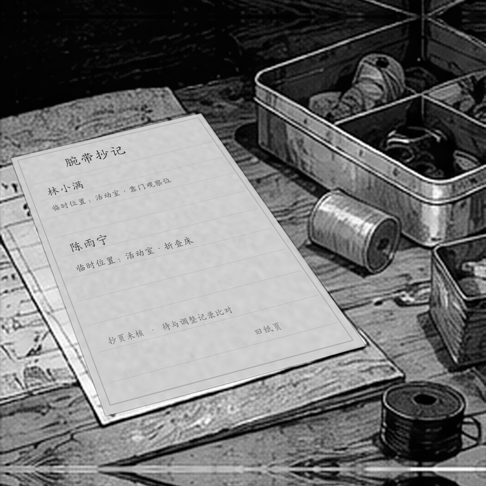
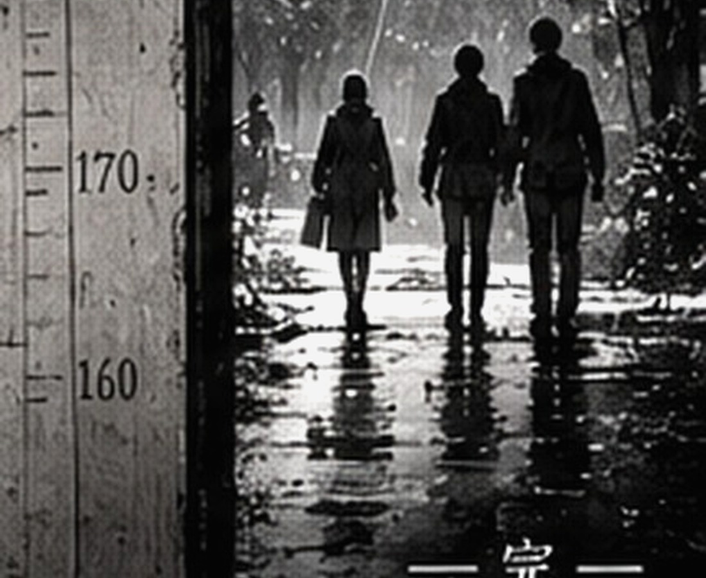

临时睡人的地方
页脚能读到一句：“低龄组暂移活动室，折叠床另记。”其余部分被水痕压住。
2007.8.18 停用
涉及儿童福利机构、暴雨事故、短暂哭泣与成年人工作失误；无血腥画面。
可用键盘完成全部操作；谜题没有倒计时。无音乐，所有关键信息均可直接阅读。

雨是在他们进门以后才密起来的；门厅的玻璃发白，锁眼里塞着半截已经硬化的胶带；林澈把钥匙装回封口袋，先看了一眼手机。
周野：“九点锁门，是吧？”
林澈：“物业说最晚九点半。你别拖。”
周野：“我来搬箱子还叫我别拖。”
沈禾：“窗边那两个先挪。底已经湿了。”
桌边放着三只旧纸箱。A 箱给学校，B 箱留给维修和拆除队，C 箱暂时什么都不算；箱盖被雨气熏得发软，边角卷着。
林澈在清点页右上角写下“20:08”，顺手把笔帽咬在嘴里；周野伸手要拿，被他偏开半寸。每换一个区域，他都会补一次时间，旁边再留经手人——这是他自己的毛病，没人要求。
周野：“你连进门都记？”
林澈：“省得回头猜。”

活动室的地面比门厅高半级；墙上残着一圈浅蓝色瓷砖，窗帘早拆了，只剩几枚生锈的挂钩；沈禾把纸箱放到墙中央，没贴墙。
沈禾：“这面墙在返潮。纸别靠过去。”
林澈蹲下去看箱号；再抬头时，靠窗那张折叠床像是铺着干净床单，床脚也没有锈；他眨了一下眼，那里只剩发硬的旧帆布和一层灰。
他站起来，又看了一遍。没有床单。
周野：“你看什么？”
林澈：“没事。”
柜顶还粘着几颗纸折的五角星，胶早黄了，星角一律往下耷；沈禾看了一眼，说其中一颗是旧作业纸，背面还留着半道没擦干净的竖式；她没去揭，只记下位置。
墙边摆着三张矮凳，一张凳腿用铁丝缠过。周野踢到它，凳子晃了两下，没有倒。
周野：“这里以前是不是临时睡过人？”
沈禾：“柜里还有东西，先翻完。”
沈禾：“这种别往学校送。纸一碰就散。”
周野：“那拍下来？”
沈禾：“登记完就放回去，柜里已经够挤了。”
柜子底层还压着一本薄薄的借用簿，封皮画满铅笔印；周野翻到中间，发现记录的不是玩具，而是谁借走了蜡笔、剪刀、胶水——有几页会在名字后面多写一句：“别给她绿色，她会把整张纸涂满。”
周野：“这谁？”
沈禾：“这页是四月，离那晚太远。先放回去。”
林澈只记下簿子的标题；那句关于绿色蜡笔的话被他留在原页上。簿子塞回去时，下面露出一张低龄组临时点名纸。

桌面上多了一页粘在木纹里的纸；边缘已经泡软，但标题还能认出来：临时床位调整；正文只有几处墨色浮在水渍上面。
页脚能读到一句：“低龄组暂移活动室，折叠床另记。”其余部分被水痕压住。

服装室比活动室冷；靠墙一排铁柜已经锈住，长桌却还能用；周野把上面压着的破塑料布掀到一边，下面露出一个掉瓷的白搪瓷盘。
盘里有几块白布。字晕得很厉害，有的只剩姓，有的只剩最后一笔。每块布边上都有剪口。

周野：“网上那帖子说的就是这个？”
沈禾：“帖子那张只拍了布签。你看下面——湿衣袋还在。”
林澈把便签贴在桌沿，没有写“名字”。他写：旧姓名布签，来源未定。
铁柜里还塞着几件没有拆包装的捐赠衣，尺码从 110 到 150 混在一起；最上面一包外包装印着很早停产的商场名字；周野抽出一件，对着自己比了比，很快又塞回去。
周野：“这颜色当年也不好看。”
沈禾：“你来挑校服？”
桌脚旁的编织袋内壁结着一层泥，袋口用蓝色塑料绳随手打了两个结；袋子没有任何特殊标记，倒是边角夹着一张湿衣收拢表，纸边已经粘在纤维上。
林澈：“如果是先剪名字，再换衣，顺序会完全不一样。”
周野：“所以你现在到底想查哪个？”
林澈：“先查他们为什么剪。”
长桌另一头有一本针线领用簿，页脚被剪掉一角；红线不是特殊物资，只是当年最耐拉的粗棉线；邹梅连续领过三个月，备注总是同一句：“缝厚布。”
沈禾把领用簿翻到三月，指了指日期：“这个先放旁边；当晚的单子另摞。”
周野：“那我把‘恐怖红线’四个字咽回去。”
沈禾：“最好。”
布边已经发白，剪口里卡着一小段暗红缝线。桌下还有一只装湿衣的编织袋。

寝室门开得不顺，周野用肩膀顶了一下。门后没有东西，只是地胶翘起来卡住了。
周野：“我刚才差点给一块地胶道歉。”
林澈：“你可以现在道。”
靠窗第四张床没有床板，床架上挂着一张旧维修牌；沈禾把牌子的文字念完，又去看床头柜里夹着的夜间照护页。
沈禾：“别数床。牌子写得很清楚，04 当天就停用了。”
床头柜最下面压着一张值日表；乔乔负责收晾衣夹，阿成负责把喝水杯送去消毒，小满那一栏被人画了两次圈，旁边写“又忘”；周野看了半天。
周野：“我九岁的时候也不可能记得收夹子。”
林澈：“你二十八也记不得还车钥匙。”
窗台里侧有一道铅笔线，旁边只写着“成 132”；林澈没有抄进主表；沈禾说那大概只是量身高留下的。
靠墙床头的旧纸签上，一行名字被水泡开，下面却还能看到“活动室折叠床”几个字。周野盯了半天，还是问了出来：
周野：“床在这里，为什么人写活动室？”
林澈：“先找完整的调床页。”
床下还有一本晚间小事本：谁把牙刷掉进水池、谁半夜踢被子、谁第二天要带作业去学校；很多字潦草得像边走边写，其中一页提到小满“睡前又问 04 床什么时候修好，她嫌活动室有人打呼”。
周野：“所以她知道自己不睡这儿？”
沈禾：“至少这页写的时候知道。看日期——就是当天。”
林澈把这一页夹到维修单后面；两个记录互相独立，却指向同一件事：04 床没人在睡，小满也已经被调走。

周野把维修单递回来时，忽然朝门外看了一眼。
林澈：“怎么了？”
周野：“没事……我以为外面有人。”
沈禾没有出去看，只把门往里拉了一点。那一眼后来谁也没拿来当证据。
04 床没有床板。旁边贴着一张维修牌，日期是事故当天上午。

记录柜的锁已经被拆过；里面不是整册档案，只有几只牛皮袋和散页；林澈把能读的按日期摊开，周野伸手想帮忙，被他拍开。
周野：“你还真护你那点顺序。”
林澈：“你一碰我就得重排。”
沈禾：“你俩先把窗关上。”
三个人留下的交接笔记长度不一样；潘琴的字最急，邹梅的字最慢，何芹中间有两行被水晕开；几张纸都提到“腕带”，但没有一张把事情从头写到尾。

同一个抽屉里还混着米面领用、消毒液补货和两张半年前的请假条；周野念到“牙疼”两个字就笑了一声。林澈没抬头，只把那页塞回原处——不是今晚要找的东西，却也没理由替别人扔掉。
周野：“你连没用的也排？”
林澈：“原来怎么放，就怎么放。”
周野：“那你刚才还拍我手。”
林澈：“因为你会把没用的放进有用的里面。”
牛皮袋最里侧还夹着一张值班时间条，没有叙事，只记谁在什么时段负责哪一层；潘琴从 18:30 起在活动室，邹梅负责洗衣房与后勤库，何芹带低龄组上楼后又返回活动室；三个人的纸，至少在空间上能同时成立。
周野把三张交接并在一起看了一遍，忽然把其中一张倒过来：“这张背面还有半句话。”
背面只剩“……先别让她们回寝室”。没有主语，也没有名字。
林澈：“这半句先夹进去，空着的别替它写。”
一张写“孩子拿错腕带”，另一张写“布签发反”。两句话看起来把责任推向了不同方向。

值班室只有半扇窗还能合上；桌角压着几本儿童生活记录，电话机没有线，墙上的白板被拆走，只剩四个固定螺丝。
林澈把“林小满 / 二层”和“陈雨宁 / 活动室”两条腕带抄记写到纸上，旁边再抄《临时床位调整》：小满在活动室折叠床，豆豆在靠门观察位。
周野：“等会儿——豆豆到底是不是陈雨宁？”
沈禾：“这本写得很清楚，登记名陈雨宁，小名豆豆。问题不在名字。”
桌上另一张分组便条写着：换衣后，低龄组先留活动室；需要重核的孩子不要回寝室拿东西；字旁边用铅笔画了两个空圈，没有填姓名。
林澈：“名字能对上，地点对不上。”
周野：“那就是腕带没认错人，认错了人当晚待的地方？”
沈禾：“名字先放一边。只看地点。”
窗台上有一只裂口搪瓷杯，杯底写着“值夜”；里面塞着四支早就干掉的圆珠笔；林澈试了一支，笔尖只划出一道浅痕。
洗衣房的排水沟已经堵死，地面却比别处干；最里面挂着一件灰色旧外套，布料硬得像晒过头的纸；工作台抽屉里有半卷暗红缝线，和服装室盘子里的一样。
周野：“红线、剪刀、名字。帖子素材齐了。”
沈禾：“你要写帖子，最好也把领用单一起写进去。”
桌角压着两条临时腕带的抄记；不是实物，只有后勤人员把上面的字重新抄在纸上：姓名、临时地点、缝制时间。

针线盒里有白线、黑线和半卷暗红线；红线最粗，缝厚布省事；邹梅后来在补记里写，她当晚手泡得发僵，针脚“难看得很”。
沈禾：“网上那句‘红线缝手’大概就从这儿来的。”
周野：“大概？”
沈禾：“我没在现场。”
那件灰外套的口袋里什么都没有；拉链坏了一半，袖口有一处补丁；周野说可以扔，林澈说先别动；两个人谁也没解释为什么。
针线柜最底层还有一张“返工”便条：两条腕带拆线后，旧线不要再用，重新缝；旁边写了一个极小的“乔”；沈禾没有把这个字当作姓名，只在登记里写“疑似经手人简称”。
周野：“你俩一个比一个不肯猜。”
林澈：“你猜你的，登记里别写。”
这次沈禾没接话，只把两条腕带抄记往临调页旁边推了半寸。
剪刀放在针线盒旁边，线头结得很粗。桌板上没有别的特殊痕迹。
交接里写着：“18:56，二名儿童暂留换衣桌，重新核对。”没有写名字。

南楼梯现在被木板封着；不是事故留下的板，是后来拆除准备时钉上的；旁边那道裂缝却从二层一直走到半层平台。
林澈把几张通行记录按时间排开；门厅水位简记写到 19:12；南楼梯维修页在 19:16 盖了“停用”；后门钥匙却在 19:18 被借出。
周野：“所以他们不是往里面带。”
林澈：“先把路走通再说。”
平台上倒着一辆旧拖把车，轮子早锈死了；十九年前的后勤通行说明特地写着“坡道可过送衣推车”；单看不重要，跟门厅水位、楼梯停用时间放在一起，能走的方向一下少了大半。
林澈：“19:16以后，如果正门和南楼梯都不能走，他们只剩哪边？”
沈禾：“把钥匙登记也算进去。”
周野去试了一下封板，没有硬掰。
周野：“别担心，我今天不负责制造新的事故记录。”
半层平台原先贴过疏散图，如今只剩一圈发黄胶痕。周野把手机举到一半，又垂下来：“一块空墙也拍？”林澈已经按了快门：“回去不一定记得它空在哪儿。”
后勤补页还提到一件小事：19:22 以后送衣推车先推到坡道外，免得孩子经过时绊脚；邹梅在句尾写了两个字——“太滑”。
沈禾：“这句跟路线有用。”
周野：“这回总算有一条不用猜人名的。”
后门平时不上主钥匙板，钥匙单独挂在洗衣房。事故当晚 19:18 有借出记录。
记录柜最下面还有一只薄牛皮袋；封面写“事故后补记”，里面只有四页；正式报告在第一页，字打得最整齐；后面三页是手写，日期都在事故以后。
正式报告只有一句和腕带有关：“转移前完成二次核对，登记无误。”
潘琴的补记多了一行：“两条腕带曾发反，乔乔先提出；”邹梅写得更直接：“我把湿布签一起放盘里，潘琴拿时认错了两块。”
林澈：“正式报告没写。”
沈禾：“先看日期。补记比正式报告晚了三天。”
林澈：“至少能对上前面的时间。”
沈禾：“能和前面的时间接上，再记。”
林澈把正式报告放到最左边，又把两张补记推到右边；他想说“可报告就是没写”，话到一半停了；沈禾已经在收旁边的塑料夹。
林澈：“怪不得正页看着这么干净……再晚三天，这几张才塞进来。”
沈禾：“嗯。”
林澈：“你不觉得这很要命？”
沈禾：“嗯。流转条到‘归档’就断了，后头没字。”
周野看了眼门外的雨，没有接话。他把手机亮给两个人看：物业刚问他们还要多久。
牛皮袋封底还有一张装订流转条：事故报告第二天上午开始汇总，第三天下午打印，手写补记并没有全部并入正文；纸上没有“删去”或者“隐瞒”一类字眼，只有“正文已定，补页归档”。
林澈：“三天……时间对上了。”
沈禾：“时间对上了。为什么没并进正文……这张流转条没写。”
周野：“你们俩今晚比档案柜还难撬。”
沈禾：“挺好用的。”

物业的消息在桌边亮了一下：外门还有二十分钟。周野把空箱子踩平，纸板“咔”地折了一声；沈禾已经装好最后一摞纸。林澈的手停在下一只牛皮袋上，停了两秒，还是收回来。
沈禾：“到这儿够了。后面如果还有，也不一定更真。”
林澈：“我知道。”
周野：“你这个‘我知道’一般代表你还想再看五分钟。”
桌上现在只剩已经读过的材料。没有新东西。林澈把便签重新按四个阶段分开。
沈禾把乔乔那张领鞋带的条子从主线材料里抽出去。
林澈：“那个也有日期。”
沈禾：“这张只是领鞋带，放生活杂项。”
周野：“可算有人治你了。”
林澈没争，把纸放回“生活杂项”。桌面空出一块，剩下的材料反而更容易看清。
周野伸手去拿两张便签，手到一半又停住，等林澈先点头。林澈看见了，把那两张往他面前推。
林澈：“这两张你排。别折就行。”
周野：“你确定？”
林澈：“快点。”
他把“红线”“剪刀”“两名儿童留下”“后门钥匙”分别写在四张小纸上，周野看了一眼：“你要是把它们单独发网上，明天又能多出一版鬼故事。”
林澈：“所以不单独发。”
沈禾把四张纸翻到背面，写上各自对应的工作问题：湿衣、身份、错配、通行。她写完把笔递回去。
沈禾：“先把每一步为什么做接上，再看整晚顺不顺。”
雨先从一层门缝进来；何芹带低龄组往楼上走，潘琴站在楼梯口数人；数到第三遍，小满还在往回看自己的鞋。
潘琴：“鞋先别管——上去！”
小满：“那双不是我的。”
潘琴：“我知道。上去再找。”
库存衣从三楼储物间搬下来；湿衣一袋袋收走以后，原来缝在衣服里的姓名布签跟着衣服一起离开了人；邹梅拿着剪刀蹲在编织袋旁边，把还能看清的布签剪下来。
邹梅：“别把衣服混了。”
周围有人：“都湿成这样了，早混了。”
邹梅没回话，把剪下来的布签放进搪瓷盘。盘底有水；她刚擦过一遍，很快又积了一层。
阿成：“我的裤子呢？”
邹梅：“哪条是你的？”
阿成：“膝盖破的。”
邹梅：“那条已经湿透了，今天先穿别人的新裤子——别皱眉，明天再换回来。”
阿成低头看了看陌生的裤脚，没再问。
潘琴把布签分给几个人。小满把手藏到背后。
潘琴：“手。”
小满：“不要。”
潘琴：“我知道。三分钟。”
邹梅：“你别跟她说三分钟，你一会儿又找线。”
潘琴：“线在你手上。”
邹梅低头看了看，没再说话。
18:56，乔乔站在换衣桌边，盯了两条腕带一会儿。
乔乔：“你写错了。”
潘琴：“哪儿？”
乔乔把小满的手腕抬高，又指了指豆豆。潘琴先皱眉，翻过另一条布带。她没有立刻说话。
潘琴：“你俩先坐这儿。别走。”
豆豆：“我要回去拿熊。”
何芹：“熊湿了。”
豆豆：“晾一下。”
何芹：“等雨停。”
豆豆：“你每次都说等雨停。”
潘琴翻了床位临调，又让何芹把照护页拿来；豆豆只认小名，别人突然叫“陈雨宁”，她不抬头；小满倒是把自己的名字说得很快，接着又去扯腕带。
潘琴：“别拆。”
小满：“勒。”
潘琴：“松一点。邹姐，剪一下。”
两条腕带重新缝过。潘琴在交接纸上写了“已核”，又把豆豆的登记名旁边补上括号：豆豆。
豆豆：“为什么要写两个？”
潘琴：“免得有人叫你半天，你又不理。”
豆豆：“我听见了。”
潘琴：“听见也不理？”
豆豆把脸转到一边。何芹忍了一下，还是笑了。
乔乔没走。她坐在桌角看潘琴写，等人把笔抬起来才说：
乔乔：“刚才是你拿错的。”
潘琴：“是。”
乔乔：“那你写了吗？”
潘琴把交接纸转了半圈，在“重新核对”后面又添了几个字。乔乔这才走。
19:16，南楼梯下面传来一声闷响。何芹站住了。乔乔拽了她一下。
乔乔：“何老师。”
何芹回过神，把最前面的两个孩子往回带。门厅积水已经漫过台阶，他们没有再下去。
后门钥匙从洗衣房取出来。队伍穿过晾衣杆之间的窄道，往后勤坡道走。
最前面的人先把送衣推车推到雨棚外，空出墙边一条路；孩子们一人扶一下墙，鞋底沾满洗衣房地砖上的水。
何芹：“别跑！前面停，后面就停。”
乔乔：“阿成鞋带开了。”
阿成：“不是鞋带，是鞋跟。”
乔乔：“反正你走慢点。”

阿成抱着一袋干毛巾，走了十几步就说重；邹梅没接，只让他拖着袋底；小满走到门口又开始扯腕带。
邹梅：“你再拆，等会儿我还得缝。”
小满：“丑。”
邹梅：“等干了再丑。”

体育馆的地板被踩得都是湿印。乔乔靠墙坐着，一边鞋带松了。潘琴拿着改正后的接收页走过来。
潘琴：“再说一遍。”
乔乔：“我刚说过。”
潘琴：“我知道。”
乔乔：“乔乔。”
潘琴低头写。笔尖在湿纸上洇开一点。
乔乔：“你笔不是一直夹耳朵上吗？”
潘琴摸了一下右耳，没摸到。笔就在手里。

最后一只箱子推回门厅时，雨已经细下来；周野把塑料布团进后备箱，沈禾蹲在车尾重新数箱号。林澈没急着走，钥匙在掌心硌了一会儿，才塞进封口袋。
周野：“回去你写哪版？”
林澈：“先按时间排。拿不准的地方……空着。”
周野：“稀奇，你也肯留空。”
林澈：“少说一句不会憋死你。”
沈禾：“他已经忍一晚上了。”
他们关掉手电，沿来时的坡道出去。
外面雨已经小了；周野把后备箱关上，又打开一次，确认学校那箱没压到待确认材料；林澈站在屋檐下把手里的便签撕成两半——写错的那半扔进垃圾袋，剩下那半夹回登记本。
周野：“饭还欠着。”
林澈：“记得。”
周野：“最好你也写张记录。”
林澈准备把登记夹塞进 C 箱，纸边却挂住了塑料扣；他低头重新理齐，最上面那张《清点登记说明》多了一行蓝黑色的字。
21:17 后门已锁，三人离场。
林澈盯的不是时间，是最右边那格：他这一晚写过的每一行都有经手人，这一行空着。
林澈：“这行谁写的？”
周野：“什么？”
周野接过去看了两秒，先摸自己的口袋，又把两只手都摊开。
周野：“我没碰你那支笔……沈禾？”
沈禾：“我一直在核箱号。”
手机屏幕亮了一下：21:17。
后备箱盖落到一半，周野的手停住了。沈禾还捏着箱号清单，纸角被风掀起又落下；林澈看了那格空白很久，最后只把登记夹扣紧。笔就在他指间——他没落下去。
清点记录已保存。